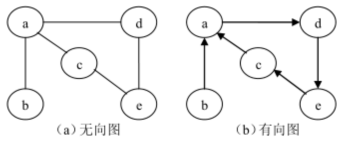
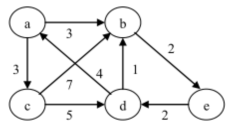

1.图的基本概念：多对多关系
图（graph）是一种网状数据结构，图是由非空的顶点集合和一个描述顶点之间关系的集合组成。
其形式化的定义如下：
Graph = ( V , E )
V = {x| x∈某个数据对象}
E = {<u , v>| P(u , v)∧(u,v∈V)}
V 是具有相同特性的数据元素的集合，V 中的数据元素通常称为 顶点（Vertex） ），
E 是两个顶点之间关系的集合。P(u , v)表示 u 和 v 之间有特定的关联属性。
若<u , v>∈E，则<u , v>表示从顶点 u 到顶点 v 的一条弧，并称 u 为弧尾或起始点，称v 为弧头或终止点，
此时图中的顶点之间的连线是有方向的，这样的图称为 有向图（directedgraph） ）。
若<u , v>∈E 则必有<v , u>∈E，即关系 E 是对称的，此时可以使用一个无序对(u , v)来代替两个有序对，
它表示顶点 u 和顶点 v 之间的一条边，此时图中顶点之间的连线是没有方向的，这种图称为 无向图（undirected graph）。
在无向图和有向图中 V 中的元素都称为顶点，而顶点之间的关系却有不同的称谓，即弧或边，为避免麻烦，在不影响理解的前提下，我们统一的将它们称为 边（edge） 。
并且我们还约定顶点集与边集都是有限的，并记顶点与边的数量为|V|和|E|。

无向图实际上也是有向图，是双向图

加权图：
在实际应用中，图不但需要表示元素之间是否存在某种关系，
而且图的边往往与具有一定实际意义的数有关，即每条边都有与它相关的实数，称为 权。
这些权值可以表示从一个顶点到另一个顶点的距离或消耗等信息，在本章中假设边的权均为正数。
这种边上具有权值的图称为 带权图（weighted graph）